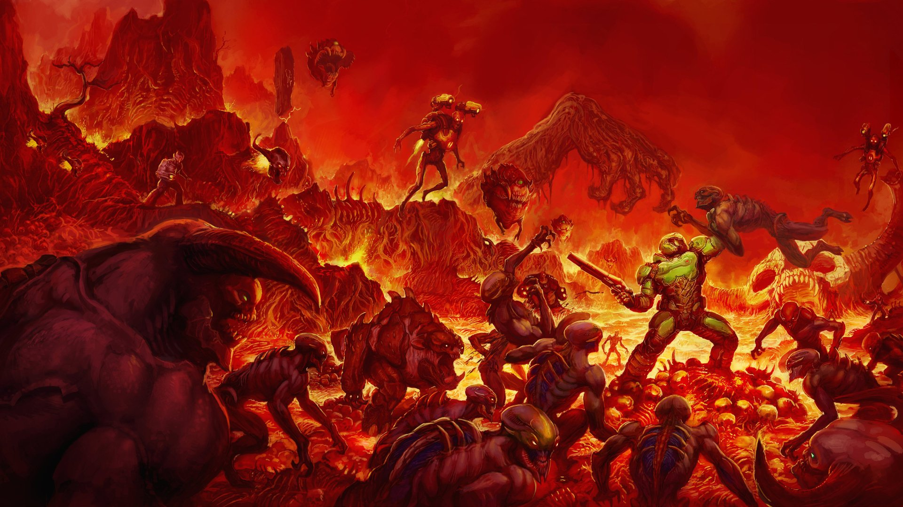

DOOM SLAYER
El Doom Slayer (también conocido por la UAC como DM1-5, Doom Marine o el Slayer; y nombrado por los demonios del Infierno como Unchained Predator o Hell Walker) es el personaje protagonista y jugable en Doom (2016) y Doom Eternal. También ha sido estrella invitada en los juegos de Quake como Quake Champions y Quake III Arena. Está destinado a ser la última iteración y continuación del clásico Doom Marine, que es el protagonista de la mayor parte de la serie. Según Tom Hall y John Romero (que trabajaron en el Doom original), era el nieto del comandante Keen y el tataranieto de William J. Blazkowicz. Algunas teorías de los fanáticos dicen que el nombre de Doom Slayer podría ser William Joseph "B.J." Blazkowicz III, pero según entrevistas oficiales, los desarrolladores declararon claramente que no tiene nombre. La ascendencia Blazkowicz de Doom Slayer puede o no ser canónica para la iteración moderna.
ORIGENES
Es un antiguo guerrero que fue desterrado al Infierno o bien decidió quedarse allí (posiblemente una referencia al final de Doom 64), en donde fue capturado por las fuerzas demoníacas y sellado en una tumba de roca volcánica. Más tarde fue recuperado por la UAC que lo retuvo "cautivo" para su estudio hasta que las hordas infernales invaden la base; luego se escapa armado solamente con una pistola y su exoesqueleto llamado Traje de pretor.
Elementos de la historia base del juego indican que él es un guerrero legendario, un miembro de los Centinelas de la Noche de Argent D'Nur, a quien los demonios temen por su capacidad de sacar fuerzas de su destrucción. Se sugiere que él ha realizado personalmente esta destrucción a través de múltiples dimensiones y eones de tiempo.
El juego sugiere fuertemente que esta versión del protagonista puede ser, el mismo protagonista que aparecía en la serie original. Elementos de su historia de fondo, como la opción de permanecer en el Infierno, la destrucción de los Titanes y la lucha contra los demonios en varias ocasiones a través de grandes dimensiones y extensiones de tiempo, sugieren una posible unificación entre las diferentes líneas evolutivas. Esto, sin embargo, se ha dejado intencionadamente vago y abierto a la interpretación.
ASPECTO
El rostro del protagonista está permanentemente oscurecido, sin embargo, la línea de la mandíbula y la estructura general de su rostro se asemejan a B.J Blazkowicz de Wolfenstein: The New Order hasta cierto punto.
Esto puede ser una referencia a cómo los modelos de protagonistas del original Doom y Wolfenstein eran muy parecidos, o también que hubiesen estado relacionados de alguna manera, curiosamente, el símbolo "Argent" (comúnmente asociado al Doom Slayer) se ve muy similar a un ancla en ángulo y las versiones con letras parecen decir "U N S C" o "U N C S", aunque esto podría ser pura coincidencia, lo que sugiere una posible insignia de unidad marine. Es posible que el Doom Marine tenga conocimiento previo de Samuel Hayden, rompiendo el panel de control en la segunda oración de Hayden, lo que sugiere un posible pasado común entre los dos, aunque también puede indicar simplemente el desprecio de Doom Slayer por explicaciones o justificaciones.
Más evidente es la aparición de varios muñecos Doomguy en el propio juego (todos se asemejan a la armadura del Doom clásico), siendo la más reconocible el muñeco Collectible Doomguy, que es idéntico a la armadura del marine original hasta en el esquema de color, lo que sugiere si el Traje de pretor es, o fue construido con partes de un modelo / variante de armadura marine, y como tal se ha convertido en una figura mesiánica del oscuro pasado de la humanidad con el infierno.
Eventualmente, la cara de Doom Slayer fue liberada (no oficialmente) a través del "ripping" de modelos y texturas, y muestra una notable similitud con la cara del Doomguy clásico. En los mapas clásicos, usa una textura basada en su cara de Doom I.
DOOM ETHERNAL
En Doom Eternal, el Slayer regresa con un Traje de pretor mejorado y rediseñado. Algunas de las nuevas mejoras incluyen la Hoja ejecutora, el equipo lanzador montado en el hombro, así como un arsenal de armas mejorado. También se revela que opera desde una estación espacial conocida como Fortaleza del Destino.
En esta oportunidad se revela gran parte de su historia de fondo. De hecho, se reconoce que es el Doomguy original, que fue encontrado por los Centinelas de la Noche cerca de la muerte, parloteando sobre lo que vio en el Infierno, y pronto fue entrenado para convertirse en un comandante en la guerra de los Centinelas contra el Infierno. Sus grandes poderes le fueron otorgados por el Serafin Samur Maykr mediante el uso de la Máquina de la Divinidad.
Un registro encontrado en el Complejo ARC muestra que su sangre había sido analizada como AB+. Se confirma que su genoma es el de un humano normal, pero cuerpos extraños no identificados también están presentes en su torrente sanguíneo, lo que puede explicar su fuerza, velocidad y resistencia sobrehumanas. Se revela que esto se debe a la tecnología de los Maykr, para otorgarle esas habilidades por razones que siguen siendo inciertas